Chapter 12: Apple App Development Ecosystem¶
Here’s one more overview chapter before you move on to build the other two apps in this book.
While building HIITFit, you learned a lot about Xcode, Swift and SwiftUI at a detailed level. In the previous chapter, you got a kind of “balcony view” of how the various property wrappers help you manage the state of your app’s data. This chapter provides a bird’s eye view of the whole Apple app development ecosystem, demystifying many of the terms you might hear when iOS developers get together for a chat. You’ll start to build your own mental model of how all the parts fit together, creating your own framework for all the new things that Apple adds every year.
A brief history of SwiftUI¶
You’ve been using SwiftUI to build HIITFit, but this is only the most recent app development paradigm from Apple.
Apple announced SwiftUI at its World Wide Developers Conference in June 2019. SwiftUI builds on the Swift programming language, which Apple announced in June 2014. SwiftUI is a Domain Specific Language (DSL), written in Swift using these new Swift features:
- Property wrappers, like
@Stateto monitor the state of properties. -
Result builders, like
@ViewBuilderto create view hierarchies. -
Opaque result types, like
some Viewto avoid explicitly writing out the view hierarchy.
Swift creates faster, safer apps than Objective-C and is more protocol-oriented than object-oriented. Chapter 15, “Structures, Classes & Protocols”, explains the difference between class inheritance and protocols.
By March 2018, the Redmonk Programming Language Rankings (bit.ly/3rsZmwq) ranked Swift and Objective-C in a tie at number 10.
Objective-C entered Apple history when Apple bought NeXT in 1997, which also brought Steve Jobs back to Apple. Jobs had resigned from Apple in 1985 after losing a boardroom battle with CEO John Sculley over the future of the Macintosh computer. Jobs, with five other former Apple executives, then founded NeXT Computers.
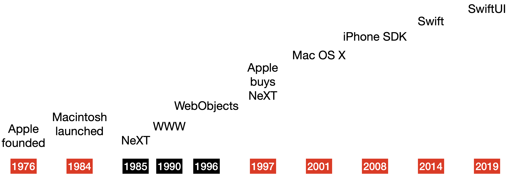
The NeXTSTEP operating system, written in Objective-C, formed the basis of Mac OS X, released in 2001. Apple provided the Cocoa API for developers to create apps for OS X. Cocoa consists of three frameworks reflecting the Model-View-Controller principles: Core Data, AppKit and Foundation. The “NS” prefix in AppKit and Foundation acknowledges their NeXTSTEP heritage.
Apple announced the iPhone in 2007 and the iPhone SDK (Software Development Kit) in 2008. This included Cocoa Touch, with UIKit replacing AppKit. Now called the iOS SDK, it helps you create apps that appear and behave the way users expect.
Fun facts¶
- The first World Wide Web server was a NeXT Computer, and id Software developed the video games Doom and Quake on machines running the NeXT operating system NeXTSTEP. In 1996, NeXT Software, Inc. released WebObjects, a framework for Web application development. Apple used WebObjects to build and run the Apple Store, MobileMe services and the iTunes Store.
- Cocoa != Java for kids: Before Jobs returned to Apple, the Apple Advanced Technology Group created KidSim, an app to teach kids to program. KidSim programs were embedded in web pages to run, so they renamed and trademarked the app as Cocoa — “Java for kids”. The Cocoa program was one of the many axed in 1997, and Apple reused the name for the OS X API to avoid the delay of registering a new trademark.
- While developing the iPhone, Steve Jobs didn’t want non-Apple developers to build native iPhone apps. They were supposed to be content making web applications for Safari. This stance changed in response to a backlash from developers, and the iPhone SDK was released on March 6, 2008.
SwiftUI vs. UIKit¶
Although you’ve used only SwiftUI to create HIITFit, UIKit has a lot of resources that can help you add features to your app or fine-tune how it looks and functions.
Most popular episode¶
As you’ll see in Section 3 of this book, “SwiftUI vs. UIKit” (bit.ly/2PGuNFy) is the most popular free episode at raywenderlich.com. Presented by Ray himself, it’s worth watching, but here’s a TL;DW summary.
Note: Like a lot of the content on this site, this episode is aimed at people who want to work for iOS app development companies. If this isn’t you, skip to the next section. Also, this is the 2019 episode. There’s a newer one, but it hasn’t had time to accumulate the number of views to overtake the original.
Three reasons why there are still more developers using UIKit than SwiftUI:
- SwiftUI only works on iOS 13 or later. Some companies still need to support iOS 12 or earlier, so they can’t switch to SwiftUI quite yet.
- SwiftUI is still not as mature as UIKit. Apple released UIKit in 2008, and it built on macOS AppKit, which came from NeXTSTEP, so there was a lot of time to get things right. SwiftUI still has missing features or rough edges, so some companies want to give SwiftUI a little more time to mature.
- Many companies have already written their apps using UIKit, and it would simply be too much work at this point to rewrite the entire thing in SwiftUI, so a lot of that old UIKit legacy code will remain.
Q: Which should you learn: SwiftUI or UIKit?
A: If you’re serious about being a professional iOS developer, our recommendation is to learn both SwiftUI and UIKit. If you end up working at a company that already has shipped an iOS app, there’s a high chance that it’s been made with UIKit. So if you want to work at one of those companies, it’s important for you to be able to work with those codebases, too. We created a special and optional learning path, called “iOS User Interfaces with UIKit” (bit.ly/2OaK4ye). If you need to learn UIKit development for your job, you should definitely check that out. But if you only care about SwiftUI, you can safely skip it.
It’s not all or nothing: It’s possible to make a certain part of your app with SwiftUI and the rest with UIKit. As companies begin to transition from UIKit to SwiftUI, we expect to see many codebases with a mixture of both SwiftUI and UIKit code in the years ahead.
Thanks, Ray! That’s the perfect segue into the next section…
Integrating new and old¶
Apple always provides support for developers to transition to new things. The Carbon API enabled developers to port “classic” Mac OS apps to OS X. Bridging headers enable developers to use Objective-C code in Swift apps and vice versa.
Developers can still create Objective-C apps without Swift and Swift apps without SwiftUI. UIKit has many more features than SwiftUI and provides much more control over the appearance and operation of user interface elements.
But no FOMO (fear of missing out)! You can use UIKit views in your SwiftUI apps:
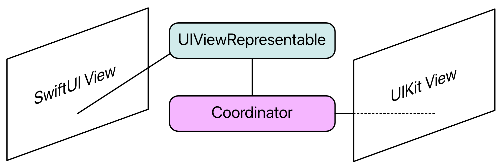
You’ll use the new PHPickerViewController in Chapter 17, “Interfacing With UIKit” and UIActivityViewController in Chapter 21, “Delightful UX — Final Touches”.
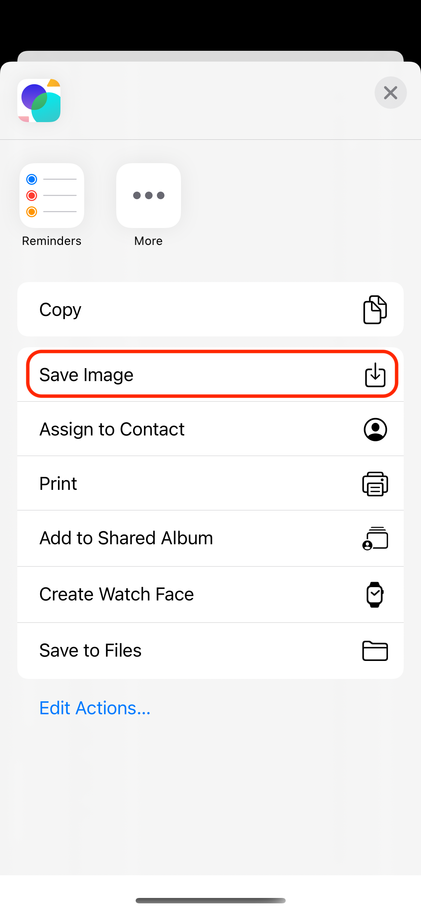
And in Chapter 22, “Lists & Navigation”, you’ll control the appearance of the navigation bar and segmented control with UINavigationBarAppearance and UISegmentedControl.appearance().
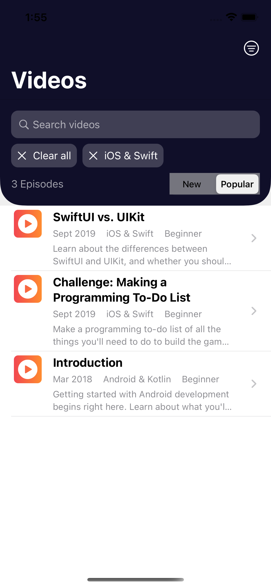
It’s also really easy to use UIColor to access system and UI element colors, and you can create an Image view from a UIImage.
Apple Developer¶
Despite Steve Jobs’ initial intentions, Apple would like everyone to be an Apple developer. Your needs and interests might be shared by a few other people or by a lot of other people. But maybe not by professional iOS developers. If you create an app you need or want, it becomes available to those other people too. Even better if your app uses some technology that only works on the newest Apple gadgets, so they have to upgrade to use your app. ;]
So Apple provides tons of resources at developer.apple.com to help you become a developer and stay up to date.
- Documentation at apple.co/3v9YVcL and Xcode’s Help ▸ Developer Documentation (Shift-Command-0)
- Human Interface Guidelines at apple.co/3cgQJPk and Xcode’s Help ▸ Human Interface Guidelines (Shift-Command-H)
WWDC¶
Every June, Apple holds the 5-day World Wide Developers Conference. The keynote on day 1 shows off all the features planned for the new versions of iOS, macOS and all the other OSes. These launch later in the year, around September or October.
For iOS developers, the more important presentation is the Platforms State of the Union on day 2, where you get your first look at the APIs for adding these new features to your apps, as well as improvements to developer tools like Xcode. During the rest of the week, you can watch presentations that introduce and dive deeper into the new features.
Apple provides the multi-platform Apple Developer app (apple.co/3eoIfs1), where you can view WWDC videos and bookmark or download your favorites.
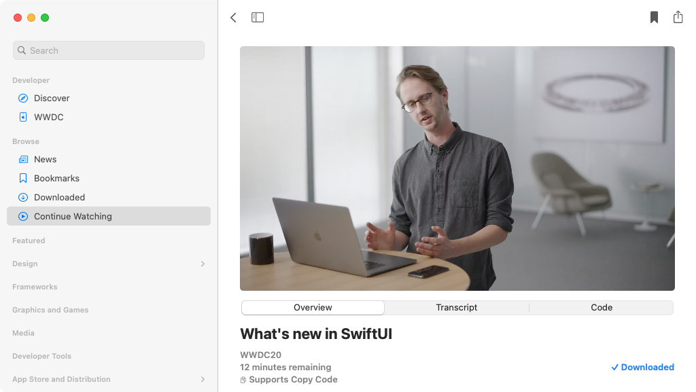
If you’re a paid-up member of the Apple Developer Program, you can download the beta versions of Xcode and the operating systems and immediately start exploring all the new things. Your goal is to include the new features in new or existing apps, all set to go into the App Store when the new iOS launches.
A word of caution: The WWDC presenters use a special in-house version of Xcode. It’s different from the Xcode beta you can download, so not everything you see in the presentations actually works in beta 1. Or beta 2. Or ever. Details of the API often change by the time Apple releases the final version, and some promised features quietly disappear.
Platforms¶
Using SwiftUI to build new iOS apps makes it easier to create similar apps on Apple’s other platforms: macOS, watchOS and tvOS. It’s not that your iOS app will “just work” on another platform. It probably won’t.
You can use many SwiftUI views on other platforms, but how they look or function might be a little different. And other platforms have views that don’t exist for iOS. Also, some features of your iOS app won’t make sense on a more stationary platform like tvOS or on a smaller screen like watchOS.
The way you assemble a SwiftUI app remains the same, no matter which platform you’re targeting. Apple expresses it this way: Learn once, apply anywhere.
Mac Catalyst is Apple’s program to make it easier to create a native Mac app from an iPad app. You turn on Mac Catalyst in the iPad app’s project settings, then modify the user interface to be more Mac-like. Some iPad UI elements aren’t quite right for the Mac user experience, and some iPad frameworks just aren’t available in macOS. Your code controls what to include using this compiler directive:
#if targetEnvironment(macCatalyst)
...
#endif
Check out Apple’s tutorial for Mac Catalyst (apple.co/3qPaen7). For an even more in-depth look, browse our book Catalyst by Tutorials (bit.ly/32ppGwM).
Note: What about Apple Silicon? It’s Apple’s program to design and manufacture its own Mac processors. Since its launch in 1984, the Mac has used Motorola 68000, PowerPC and Intel CPU chips. The Apple M1 Chip integrates Apple’s new CPU with its new GPU, neural engine and more. You can install Rosetta 2 on an Apple Silicon Mac to run apps written for Intel Macs.
Frameworks¶
The SDK has a lot of frameworks, and Apple adds new ones every year. The ones every app needs are modernized versions of the original Cocoa:
- Core Data or some other database technology for data persistence.
- SwiftUI and/or UIKit for user interface.
- Foundation to manipulate and coordinate data and views.
Note: Core Data is a massive topic and, if you’d like to learn more, we have a book, Core Data by Tutorials (bit.ly/39lo2k3) and video courses Beginning Core Data (bit.ly/2OGjuwG) and Intermediate Core Data (bit.ly/3bE2H6z) to help you on your way.
The apps in this book use these frameworks:
In HIITFit and RWFreeView, AVKit for the AVPlayer in VideoPlayer:
In Chapter 17, “Interfacing With UIKit”, PhotosUI for PHPickerViewController:
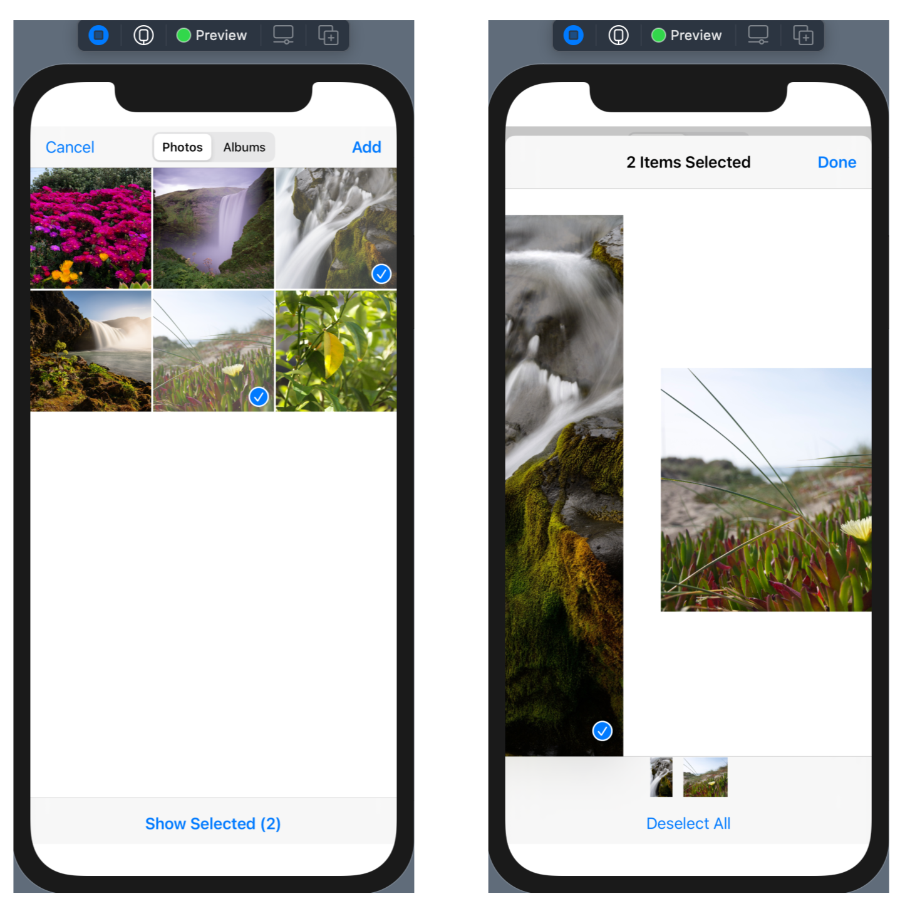
In the Chapter 17 challenge, PencilKit for PKCanvasView:
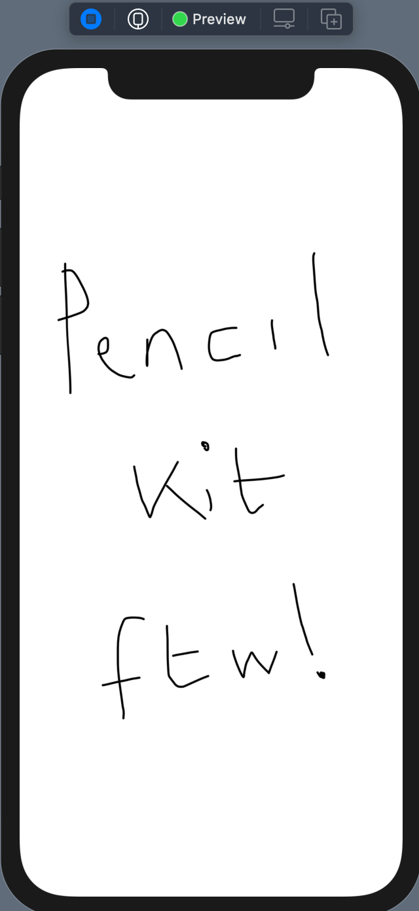
In Chapter 26, “Widgets”, WidgetKit to create widgets:
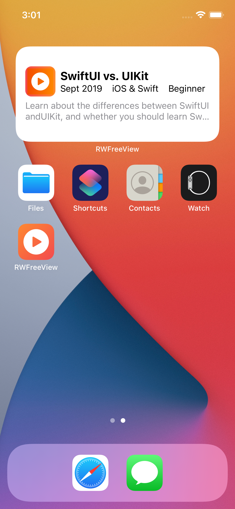
These next two frameworks are important, but beyond the scope of this book:
- Accessibility: Paying attention to accessibility is one of the easiest ways to grow the audience for your apps. See Chapter 12, “Accessibility”, in SwiftUI by Tutorials (bit.ly/32oFTCs) and our three-part tutorial “iOS Accessibility in SwiftUI Tutorial” (starting at bit.ly/2WYD9sI).
- Combine: You used a
Timerpublisher in Chapter 6, “Adding Functionality to Your App”, but there’s so much more to learn about Combine. This new framework is a major change to the way iOS apps handle concurrency. See Combine: Asynchronous Programming in Swift (bit.ly/3l7VqPq) and the video course Reactive Programming in iOS with Combine (bit.ly/3rGsL6D).
Some other frameworks you might want to explore:
MapKit to add maps, user location, routing or overlay views to your apps:
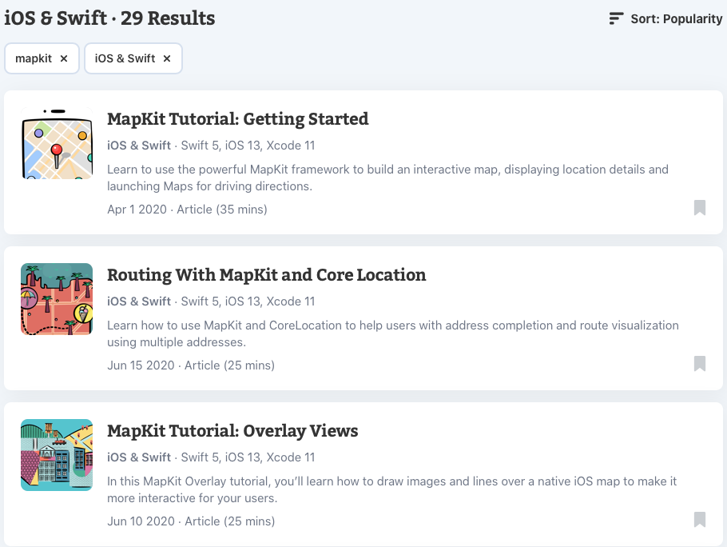
WatchKit to create apps for Apple Watch: Watch for the update to our book watchOS by Tutorials.
ARKit for augmented reality: See Apple Augmented Reality by Tutorials (bit.ly/3tabJxZ) and our video course “Beginning ARKit” (bit.ly/3qJ2a7n). Be prepared for Apple’s mixed reality headset, predicted for mid-2022 (bit.ly/38rEE8K).
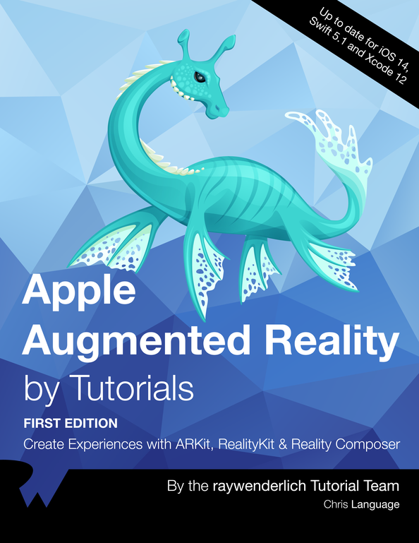
Explore all the Technologies at apple.co/3rwyxrj:
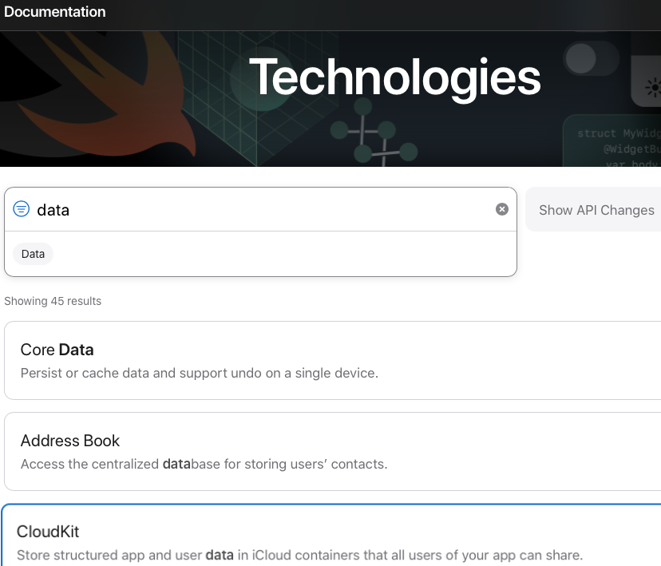
And you can browse framework-specific videos in the Apple Developer app:
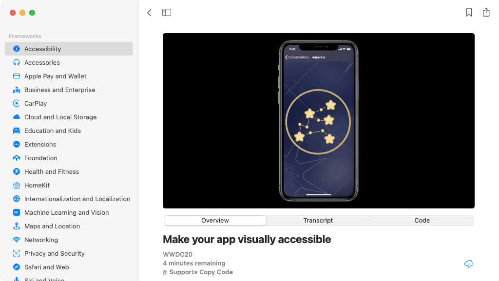
Capabilities¶
Many of the frameworks are for adding special features to your apps. Apple calls these capabilities.
➤ To see a list of capabilities, open one of your Xcode projects or create a new one. On the project page, select a target, click the Signing & Capabilities tab, then click + Capability:
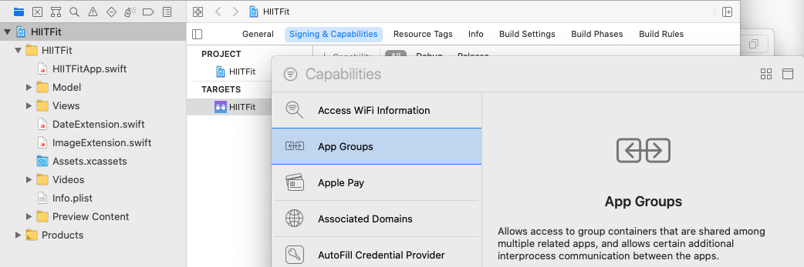
You’ll use an App Group to share data between your app and its widget in Chapter 26, “Widgets”.
If you’re not in the Apple Developer Program, you can add only some of these capabilities to your apps. They’re listed in the third column on this page: apple.co/3rOhlNW.
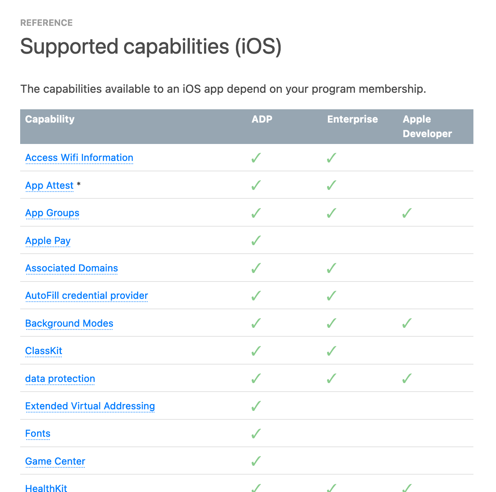
➤ Scroll down the page to see all the capabilities you can add if you join the Apple Developer Program.
Developer Programs¶
So what are the three types of Developer?
Apple Developer:
- No annual fee.
- Access to documentation and videos.
- Free provisioning to install Xcode projects on your devices: Xcode creates a provisioning profile that lets you install a few apps. The provisioning profile expires after seven days, so the apps will stop working on your device. Simply delete the profile and reinstall your app.
Apple Developer Program (apple.co/3emR2ur):
- Annual fee approximately equivalent to US$99 in your currency.
- Access to beta operating systems and applications.
- A web interface for managing your certificates, identifiers and profiles.
- Access to App Store Connect: Distribute your beta apps to testers with TestFlight; submit your apps to the App Store.
- During virtual WWDC: You can request a lab appointment or post forum questions to Apple engineers about WWDC content. When in-person WWDCs resume, you can register for the ticket lottery.
What if you have apps in the App Store but you don’t renew your membership? Here’s Apple’s answer:
Expired Memberships: If your Apple Developer Program membership expires, your apps will no longer be available for download and you will not be able to submit new apps or updates. You will lose access to pre-release software, Certificates, Identifiers & Profiles, and Technical Support Incidents.
Apple Enterprise Program is for companies that want to distribute apps only to employees. The fee is US$299 or equivalent per year. Enterprise apps aren’t submitted to the App Store so don’t have to comply with Apple’s requirements. But there are a lot of legal requirements (apple.co/3coUHVU), and it’s probably easier to just use TestFlight.
App Distribution¶
The actual procedure for getting your app into the App Store changes a little bit every year. Apple’s documentation can be confusing.
Check out our book iOS App Distribution & Best Practices (bit.ly/3al3Hez) or video course Publishing to the App Store (bit.ly/3tckW8Z).
Housekeeping & trouble-shooting¶
Hopefully, you haven’t run into any issues while creating HIITFit. Xcode’s error and warning messages are often helpful, but sometimes they’re just wrong. At first, you won’t be sure if it’s something you need to fix but, as you gain more experience, you’ll get a feeling for when Xcode is wrong or confused. It does happen. When this happens to an iOS developer, one of the first things they do is Clean Build Folder. Read on to find out what this involves.
DerivedData/Build¶
Xcode maintains a lot of files in ~/Library/Developer/Xcode. Of particular interest is DerivedData, where Xcode creates a folder for every project you’ve ever created or opened. This is where Xcode stores intermediate build results, indexes and logs.
The easiest way to locate your project’s derived data folder is with the new Xcode menu item Reveal Build Products Folder.
➤ Open one of your Xcode projects or create a new one. If it’s new, press Command-B or refresh a preview to build it. Then select Product ▸ Reveal Build Products Folder:
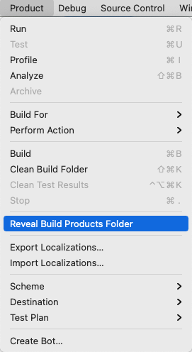
➤ In the Finder column view, scroll left to see your project’s folder in DerivedData:
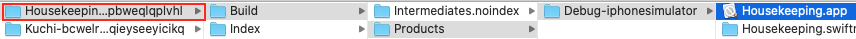
The folder name starts with the name of your project followed by a hash value.
➤ Select this folder, then view it as a list and open the Build folder:
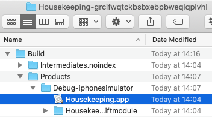
➤ Open Intermediates.noindex and drill down through its .build, Debug and .build folders to find Objects-normal/x86_64 or, for you lucky M1 owners, arm64:
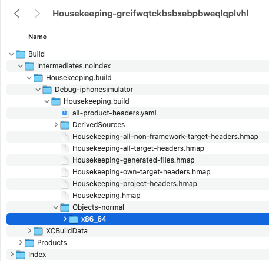
➤ Double-click x86_64 or arm64 to open it, then sort on Date Modified:
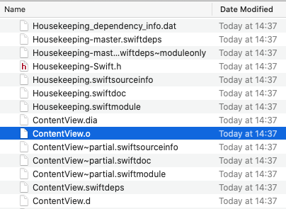
➤ Note the location and timestamp of ContentView.o.
➤ In Xcode, make a change in ContentView.swift, press Command-B to rebuild, then look at ContentView.o in x86_64 or arm64:
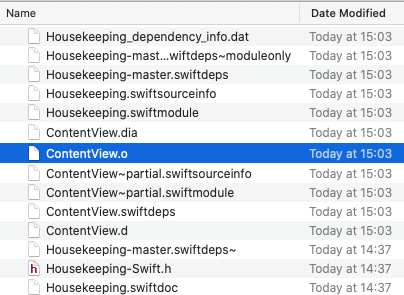
Xcode updated about half the files, including most of the ContentView files. Xcode recompiled ContentView.swift but not HousekeepingApp.swift. It knows (most of the time) which files have changed and doesn’t recompile files that haven’t changed. But sometimes, something goes wrong with this system, and Xcode complains about code that is correct, or weird errors appear for no apparent reason. Then it’s time to clean the build folder.
➤ In Xcode, press Shift-Command-K or select Product ▸ Clean Build Folder from the Xcode menu:
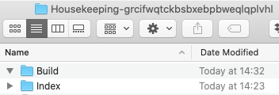
This command deletes everything in your project’s Build folder, giving you a fresh start.
DerivedData/Index¶
The Index folder stores data Xcode uses for search, Open Quickly and refactoring. Again, sometimes the indexes get mixed up, causing strange Xcode behavior. There’s no menu command to delete the indexes. You just have to delete the whole derived data folder and let Xcode re-create it.
➤ Press Command-up-arrow to get back to your derived data folder or double-click its name in the path bar:
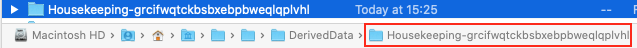
➤ In Finder, press Command-delete to delete the whole folder, then in Xcode, press Command-B to rebuild:
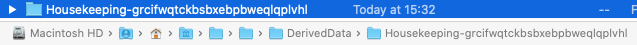
Xcode creates a new derived data folder, with the same name.
When Xcode behaves strangely¶
Xcode is a hugely complex app, and sometimes it needs a nudge or something stronger to “clear its head”.
Here are the escalating levels of intervention that most developers follow:
- Clean Build Folder.
- Delete the project’s DerivedData folder.
- Restart Xcode.
- Restart Mac.
Strange but true: Deleting earlier versions of Xcode can fix some weird issues, like no color-coding in the editor or Command-/ not working.
Reclaiming disk space¶
Weird Xcode behavior isn’t the only reason to delete derived data folders. Long after you’ve finished working on a project — or even deleted it — its derived data folder is still there, taking up disk space. Many developers routinely delete the entire DerivedData folder every month or so, reclaiming gigabytes of space. If you’re running low on disk space, it’s certainly the first place you should look.
Command-delete just moves it to Trash, where it still takes up space. To really delete the folder, you can enter this command in Terminal:
rm -rf ~/Library/Developer/Xcode/DerivedData/*
Or, if you’re running Big Sur, you can open Trash and selectively erase the folder. But Big Sur’s storage management provides an easier way to clear even more space.
➤ In the Apple menu, select About this Mac and click Storage. Then click Manage and select Developer. Select Xcode Caches and Project Build Data and Indexes then click Delete…
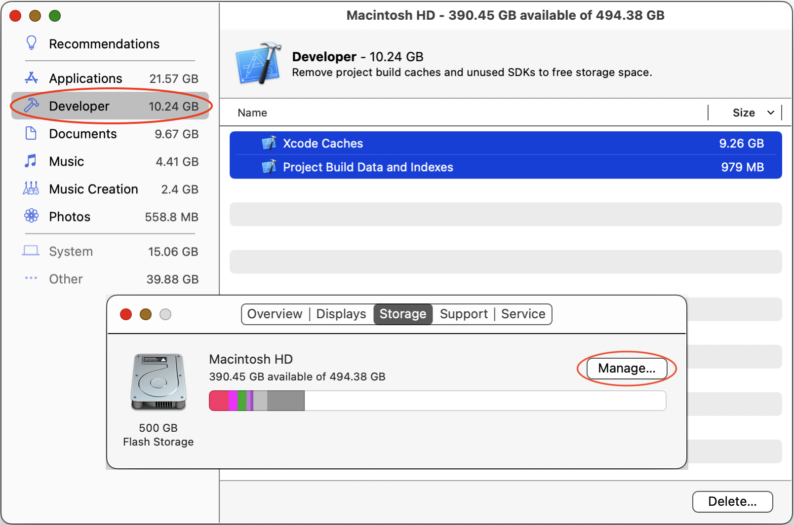
Seeking help from the community¶
SwiftUI’s error messages can be mysterious. If you get an error message and can’t figure out what it wants you to do, select the whole message, then select Search With Google from the right-click menu.
Many search results will be Stack Overflow or Apple developer forum questions, hopefully with answers.
Also check out raywenderlich.com forums (bit.ly/3rHLXRj) and Discord (bit.ly/3lajOjf).
The raywenderlich.com team and members are a terrific resource, but there’s also a large worldwide community of iOS developers. They’re almost universally friendly, welcoming and generous with their time and expertise.
An easy path to join this community is to follow @codeine_coding on Twitter and attend his monthly #iOSDevHappyHour events:
Key points¶
- SwiftUI is a Domain Specific Language built on Swift, a faster and safer programming language than Objective-C.
- “SwiftUI vs. UIKit” is the most popular free episode at raywenderlich.com and answers the big question: Which should you learn?
- You can use UIKit views and view controllers in your SwiftUI apps.
- Apple provides a lot of resources to help you become a developer and stay up to date: Documentation and human interface guidelines are available on the website and in Xcode. Use the Apple Developer app to watch WWDC videos.
- The SDK has a lot of frameworks, many for adding special features (capabilities) to your apps.
- Members of the Apple Developer Program can add all the capabilities and also get early access to beta operating systems and developer tools. And only members can participate fully in WWDC.
- Xcode stores intermediate build results, indexes and logs in your project’s derived data folder. Sometimes you need to Clean Build Folder or delete the entire derived data folder. To reclaim disk space, periodically delete the whole DerivedData directory.